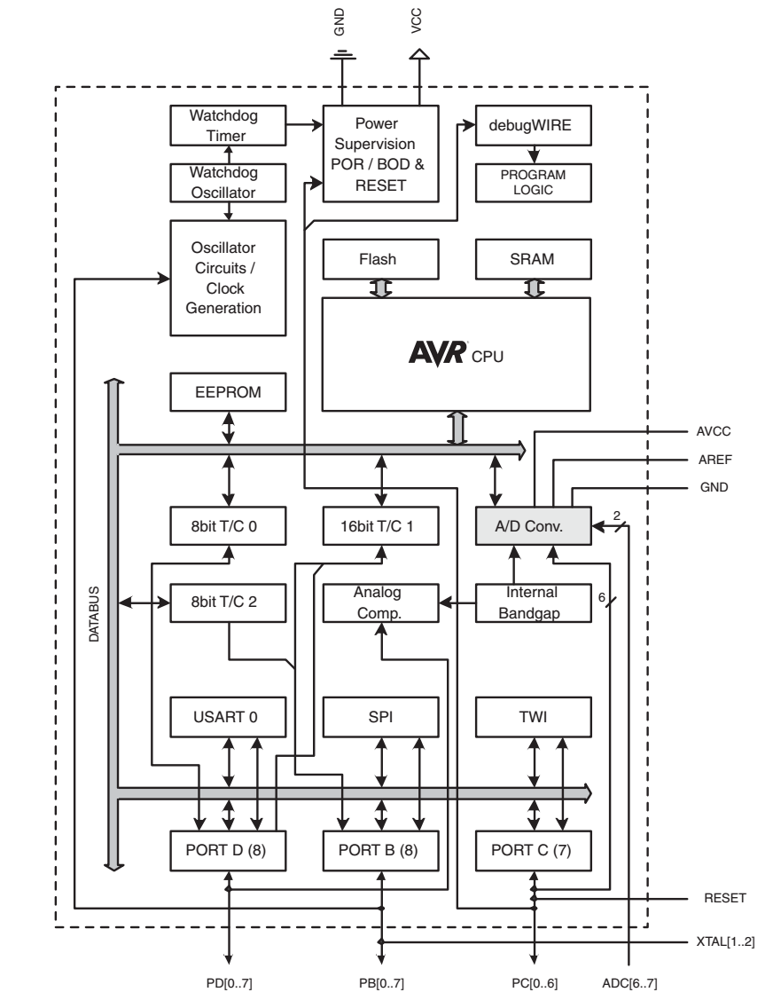

Microcontrolador: computador (processador + memória + armazenamento) + periféricos de comunicação e controle.
Pode obter sinais de sensores, bem como enviar sinais para controlar dispositivos. Parte ativa de um experimento
Circuito digital com possíveis aplicações analógicas
Atenção: O arduino e seus periféricos são adequados para trabalhar com tensões entre 0 e 5 V. Ao conectar circuitos analógicos, deve-se ter sempre ter cuidado para que o circuito analógico não exceda estas especificações!
Aqui, focaremos principalmente em alguns periféricos: GPIO, PWM/TIMER e ADC.

Periféricos úteis em eletrônica analógica
Estamos interessados em que tipo de grandezas físicas num circuito eletrônico?
Tensões, correntes e suas variações no tempo.
Algumas aplicações dos periféricos:
GPIO: pode ser usado para gerar uma tensão \(0\text{ V}\) ou \(+5\text{ V}\)
PWM/TIMER: pode ser usado para gerar sinais analógicos e/ou medir tempos com uma precisão razoável (<1 \(\mu\)s).
Conversor analógico digital (ADC): mede a tensão entre um dado terminal e o terra, e registra o valor numa variável.
Entrada e saída digital (Input Output - IO)
As portas Dx (Digital X) possuem a capacidade de aplicar tensões (0V ou 5V) via software.
Maior corrente por pino (entrando ou saindo): 40 mA
Máxima corrente total passando por todos os pinos do arduino: 200 mA
Arduino segue a lógica digital binária (Boole)
Também é possível ler tensões em Dx:
Se \(V_{Dx} < 0.3 V_{CC}\), então lê o valor \(0\). (\(V_{Dx}<1.5V\))
Se \(V_{Dx} > 0.7 V_{CC}\), então lê o valor \(1\). (\(V_{Dx}>3.5V\))
E se \(1.5\text{ V}<V_{Dx}<3.5\text{ V}\)?
Saída digital
Façamos o arduino dar um sinal de vida.
Abrir a Arduino IDE.
Abrir o exemplo em Arquivo\Exemplos\01. Basics\Blink
No código original, o LED pisca a 0.5 Hz. Modifiquem o código para que o LED pisque a uma taxa de 1 Hz.
Faça com que o led pisque apenas uma única vez.
Faça com que o led pisque apenas 3 vezes.
Eletrônica do Blink
O arduino já possui um LED na própria placa para que façamos este teste inicial.
Podemos também conectar um LED próprio, usando uma protoboard
Ao invés do LED_BUILTIN, vamos usar o pino D13 como fonte
Sugestão importante: ao conectar uma fonte de tensão, usar fios vermelhos para indicar tensões (\(+V\) e \(-V\)), e preto para indicar o terra (\(0\text{ V}\)).
Componentes necessários:
Resistor 220 \(\Omega\)
LED
Problema: que modificações precisaríamos fazer no programa e no circuito para que o led utilize o pino 10?
Importante: Faremos outro exercício a seguir, mas não remova nada da montagem atual
Leitura digital de tensão
Nos exemplos anteriores, o arduino controla um led. Este sinal sai do arduino.
Queremos também enviar sinais para controlar o arduino. O sinal entra no arduino.
Ex.: Um botão para controlar o volume de um som enviado a um auto-falante.
Inicialmente, vamos considerar apenas a entrada de sinais digitais.
Lembrando…
Se \(V_{Dx} < 0.3 V_{CC}\), então lê o valor \(0\). (\(V_{Dx}<1.5V\))
Se \(V_{Dx} > 0.7 V_{CC}\), então lê o valor \(1\). (\(V_{Dx}>3.5V\))
Circuito equivalente
Como representar um botão ideal em um circuito?
Circuitos aberto (Não há contato elétrico) e fechado (Há contato elétrico).
Como converter a informação de que o contato elétrico foi realizado ou não em uma tensão?
2 estados representáveis por uma resistência efetiva:
Aberto (\(R=\infty\)) queremos que \(V\rightarrow 0\) V
Fechado (\(R=0\)) queremos que \(V\rightarrow 5\) V
Podemos usar um divisor de tensão
\(V_O = \frac{R_2}{R_1+R_2} V_{CC}\)
O botão deve ser \(R_1\) ou \(R_2\) para satisfazer as condições acima? O que acontece se trocarmos o resistor e o botão no circuito?
Leitura do estado do botão
Componentes necessários:
Botão
Resistor 10 K\(\Omega\)
O pino compartilhado entre o resistor e o botão deve ser conectado a D2
Abrir o exemplo em Arquivo\Exemplos\01. Basics\DigitalReadSerial
Compilar (⭢), abrir Ferramentas/Monitor Serial(CTRL+SHIFT+M) e observar…
O estado do botão é exibido no Monitor Serial.
Analisando o DigitalReadSerial
Documentação
Declaração da variável pushButton
int pushButton indica um espaço na memória que será usado para armazenar um número (tipo int). A variável deve sempre ser definida antes de ser utilizada!
Para manipular esta informação na memória podemos nos referir ao nome pushButton.
Operações matemáticas: soma(+), subtração(-), multiplicação(*), divisão(/). Podemos também obter o resto da divisão de um inteiro por meio do operador módulo(%).
Operações matemáticas podem ser agrupadas utilizando-se parênteses (1+2)/3==1
Outras funções (\(\cos,\exp\)…) podem ser vistas em arduino->Refs.
Analisando o DigitalReadSerial
Continuando…
Inicializa a comunicação com o computador através de Serial.begin(9600);
pino pushButton(D2) será usado para medir tensões bináriaspinMode(pushButton, INPUT);
As etapas acima configuram os periféricos de comunicação (Serial) e de medição binária de tensão (INPUT). O setup() termina então com }